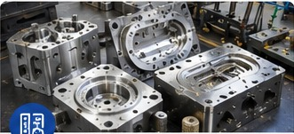

RUBBER MOULDS & TOOLS
Rubber Moulds & Tools
- Compression moulds
- Transfer moulds
- Injection moulds
- O-ring moulds
- Rubber seal moulds
- Gasket moulds
- Bush moulds
- Diaphragm moulds
- Valve-seat moulds
- Custom rubber component moulds
Materials: EPDM, NBR, HNBR, FKM/Viton, Silicone, Neoprene and other elastomers.